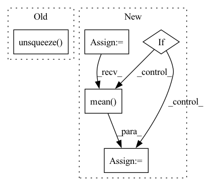

Pattern ID :35880
Before Change
if prediction.size() != target.size() or target.ndim < 3:
raise TypeError(fInputs must be of the same shape (batch_size,channels,samples)
got {prediction.size()} and {target.size()} instead)
prediction,target = prediction.unsqueeze( 1) ,target.unsqueeze(1)
class Avergeloss(nn.Module):
After Change
target_energy = torch.sum(target**2,keepdim=True,dim=-1)
scaling_factor = torch.sum(prediction*target,keepdim=True,dim=-1) / target_energy
target_projection = target * scaling_factor
noise = prediction - target_projection
ratio = torch.sum(target_projection**2,dim=-1) / torch.sum(noise**2,dim=-1)
si_sdr = 10*torch.log10(ratio).mean(dim=-1)
if self.reduction == "sum":
si_sdr = si_sdr.sum()
elif self.reduction == "mean":
si_sdr = si_sdr.mean()
else:
pass
return si_sdrIn pattern: SUPERPATTERN
Frequency: 3
Non-data size: 5
Instances Fragment ID: 101908050
Project Name: shahules786/mayavoz
Commit Name: 838b7d2357c75c14e09bc7c4daef1518269fae63
Time: 2022-09-28
Author: shahules786@gmail.com
File Name: enhancer/loss.py
M Class Name: Si_SDR
N Class Name: Si_SDR
M Method Name: forward(3)
N Method Name: forward(3)
M Parent Class: nn.Module
N Parent Class: nn.Module
M File Name: enhancer/loss.py
N File Name: enhancer/loss.py
M Start Line: 49
M End Line: 49
N Start Line: 55
N End Line: 69
Before Change
estimated_sources_amplitude[target].append(_estimated_sources_amplitude)
estimated_sources_amplitude = [
torch.cat(estimated_sources_amplitude[target], dim=0).unsqueeze(dim=0) for target in __sources__
]
estimated_sources_amplitude = torch.cat(estimated_sources_amplitude, dim=0) // (n_sources, batch_size, n_mics, n_bins, n_frames)
estimated_sources_amplitude = estimated_sources_amplitude.permute(0, 2, 3, 1, 4)After Change
if n_mics == 1:
_mixture_amplitude = torch.tile(_mixture_amplitude, (1, NUM_CHANNELS_MUSDB18, 1, 1))
elif n_mics == 2:
_mixture_amplitude_flipped = torch.flip(_mixture_amplitude, dims=(1,))
_mixture_amplitude = torch.cat([_mixture_amplitude, _mixture_amplitude_flipped], dim=0)
else:
raise NotImplementedError("Not support {} channels input.".format(n_mics))
for target in __sources__:
_estimated_sources_amplitude = model(_mixture_amplitude, target=target)
if n_mics == 1:
_estimated_sources_amplitude = _estimated_sources_amplitude.mean(dim=1, keepdim=True)
elif = _estimated_sources_amplitude.mean(dim=0, keepdim=True)
else:
raise NotImplementedError("Not support {} channels input.".format(n_mics))
estimated_sources_amplitude[target].append(_estimated_sources_amplitude) Fragment ID: 101908064
Project Name: tky823/dnn-based_source_separation
Commit Name: 57562b1915873a988dcdd4caa37401c879af39f8
Time: 2021-10-16
Author: 40362510+tky823@users.noreply.github.com
File Name: egs/tutorials/d3net/src/adhoc_utils.py
M Class Name: AnonimousClass
N Class Name: AnonimousClass
M Method Name: separate_by_d3net(3)
N Method Name: separate_by_d3net(3)
M Parent Class:
N Parent Class:
M File Name: egs/tutorials/d3net/src/adhoc_utils.py
N File Name: egs/tutorials/d3net/src/adhoc_utils.py
M Start Line: 66
M End Line: 87
N Start Line: 66
N End Line: 96
Before Change
loss_table = speaker_vector.unsqueeze(dim=2) - speaker_vector.unsqueeze(dim=1)
loss_table = F.relu(1 - torch.sum(loss_table**2, dim=-2)) // (batch_size, n_sources, n_sources, T)
loss_table = torch.sum(mask.unsqueeze(dim=2) * loss_table, dim=2) // (batch_size, n_sources, T)
return loss + loss_table
After Change
loss_hinge = F.relu(1 - distance_table) // (batch_size, T, n_sources, n_sources)
loss_hinge = torch.sum(mask * loss_hinge, dim=2) // (batch_size, T, n_sources)
loss = loss_distance + loss_hinge
if batch_mean:
loss = loss.mean(dim=0)
return loss
def compute_local_classification(self, distance, batch_mean=True): Fragment ID: 101908065
Project Name: tky823/dnn-based_source_separation
Commit Name: ef4f341fcfa12a32b402a04333c6051659991ede
Time: 2021-11-03
Author: delta9guitar97@gmail.com
File Name: src/models/wavesplit.py
M Class Name: WaveSplit
N Class Name: WaveSplit
M Method Name: compute_speaker_distance(5)
N Method Name: compute_speaker_distance(3)
M Parent Class: WaveSplitBase
N Parent Class: nn.Module
M File Name: src/models/wavesplit.py
N File Name: src/models/wavesplit.py
M Start Line: 59
M End Line: 77
N Start Line: 156
N End Line: 179